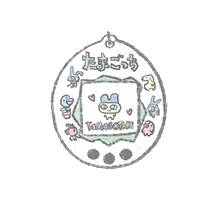
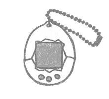

WELCOME TO THE WORLD OF TAMAGOTCHI!
Are you ready to experience the joy of raising a virtual pet? Tamagotchis are more than just toys—they’re interactive, fun, and engaging companions that bring nostalgia and excitement to all ages. Whether you're a long-time fan or just discovering them, Tamagotchis offer a unique blend of responsibility and playfulness. Plus, they’re great for anyone with pet allergies, offering the fun of a pet without sneezing or itchy eyes!
WHY OWN A TAMAGOTCHI?
Tamagotchis are the perfect virtual pet! They respond to your care, evolve based on your interactions, and offer endless entertainment. With simple yet rewarding gameplay, they teach responsibility while bringing a sense of companionship. Plus, they’re portable, making them the perfect on-the-go digital friend!

WATCH TAMAGOTCHI IN ACTION!
Check out the official Tamagotchi anime opening. See the cute characters come to life in a fun and colorful intro!
WHAT THIS WEBSITE COVERS
This website is your ultimate guide to the world of Tamagotchi, from the classic models to the latest releases. Here’s what you’ll find:
- Beginner’s Guide to the Original Tamagotchi:
-
- The second page will focus on beginner tips for caring for the newly rereleased Original Tamagotchis. It will cover essential tasks like feeding, cleaning, and playing while explaining how to keep your virtual pet healthy and happy.
- You’ll also learn about the differences between Gen 1, Gen 2, and Gen 3.
- Exploring Modern Tamagotchis:
-
- The third page will dive into the evolution of Tamagotchi, highlighting newer versions such as the Tamagotchi Connection, Tamagotchi On, Tamagotchi Nano, Tamagotchi Pix, and Tamagotchi Uni.
- You’ll discover how these models introduce new features, connectivity, and customization options while retaining the classic Tamagotchi charm.
HISTORY OF THE TAMAGOTCHI
Tamagotchi, the iconic handheld digital pet, was released in Japan on November 23, 1996, by Bandai, co-created by Akihiro Yokoi and Aki Maita (Tamagotchi Official, n.d.). The concept was inspired by a commercial featuring a boy who couldn’t take his pet turtle on a trip, sparking the idea for a portable pet (Rossen, 2021). The name "Tamagotchi" (たまごっち) combines the Japanese word for "egg" (tamago) and the English word "watch" (Tamagotchi Fandom, n.d.).The egg-shaped device, equipped with a small LCD screen and three buttons, allowed users to raise a virtual pet by feeding, playing with, and cleaning up after it (Mel, 2023).

The pet's growth depended on the owner's care, teaching responsibility. Neglect would result in the pet’s death, often turning it into a ghost or sending it back to its home planet (Rossen, 2021). The device quickly became a sensation, with over 91 million units sold worldwide by 2023 (Tamagotchi Official, n.d.).Tamagotchi returned in 2004 with the Tamagotchi Connection, featuring infrared communication, and has since evolved with various models, including the Wi-Fi-enabled "Tamagotchi Uni" in 2023 (Tamagotchi Official, n.d.). The franchise has inspired countless imitators and remains a beloved part of pop culture (Tamagotchi Fandom, n.d.).